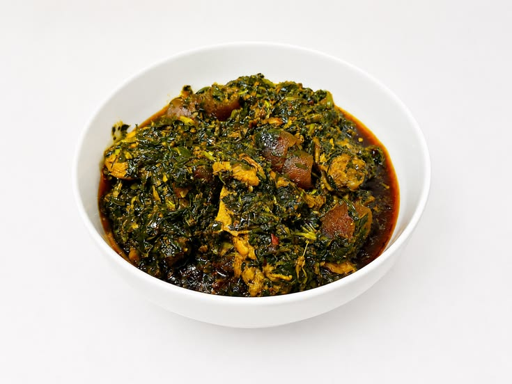

Afang Soup
Home

A delicious and nutritious soup made with afang leafs and other ingredients.
Afang soup is a rich, nutrient-dense delicacy native to the
Efik ,
Ibibio and
Anaang
people of southern Nigeria. It is prepared using a perfect combination of wild Afang leaves and water-leaf. The unique texture comes from slicing the Afang leaves very thinly and pounding them before adding them to the pot.
Ingredients for the above cooked Afang Soup
- Afang leafs
- Water-leaf
- Meats
- Goat Meat
- Pork
- Chicken
- Cow Skin
- Oil
- Salt
- Fishs
- Stock Fish
- Ibat
- Crayfish
- Catfish
- Perewinkle
- Water
- Spices
Steps to Prepare Afang Soup
- Get all the above ingredients ready
- Wash the ingredients the ingredients, that's the meat, perewinle, afang leaves, water-leaf, properly
- Steam the meats in separate pot
- Make sure the afang and water-leaf are all sliced separately into different trays
- Add normal quantity of water to the pot with the stockfish inside and set it on fire for some minutes till it boils
- After the water and stockfish inside gets boiling for long
- Add the sliced water-leaf inside the boiling water and leave it for some minutes
- Add some amount of salt, crayfish and spices to taste
- Add some amount of palmoil
- Add all steam meats to the pot
- Observe the quantity of water and make sure the soup is not getting dried out
- Wait for some minutes for proper cooking
- have a taste of the soup while on fire
- after verification of the taste close the pot for some 1.5 minutes
- Add the sliced affang leafs to the pot for 1 minutes
- Stir the soup well for 1 minutes
- Remove the pot from fire immediately after the one minutes of stiring
- food is ready
Home